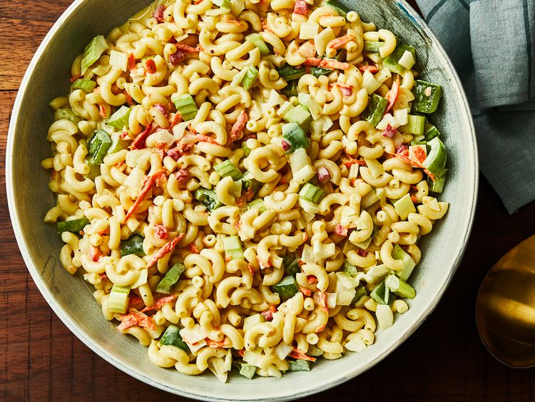

Macaroni Salad
Back to home page

Description
This creamy macaroni salad with celery, onion, green pepper, carrot, and pimentos is easy to make and is the perfect crowd-pleasing dish to bring to your next picnic or potluck.
Ingredients
- Macaroni
- Condiments
- Sugar/Vinegar
- Seasonings
- Vegetables
Steps
- Gather all ingredients
- Boil a pot of lightly boiled water. Cook macaroni in the pot for about 8 minutes in lightly salted water
- Mix mayonnaise, sugar, vinegar, mustard, salt, pepper and macaroni in a large bowl
- Stir in celery, onion, green pepper, carrot, and pimentos.
- Refrigerate salad for at least 4 hours before serving, but preferably overnight.